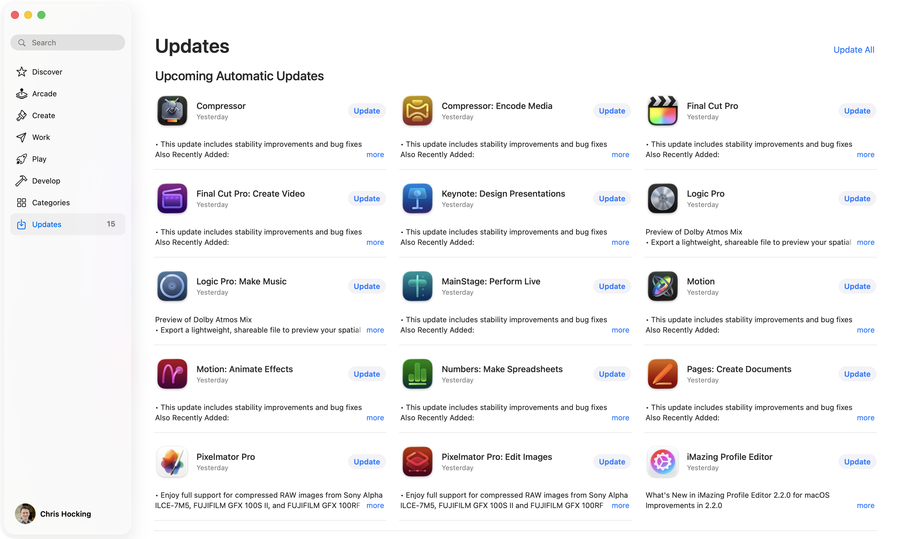

10th April 2026
It's Apple Creative Studio release day! 🥳

There's new updates across the board:
- Compressor Creator Studio v5.2
- Compressor v5.2
- Final Cut Camera v2.2
- Final Cut Pro Creator Studio v12.2
- Final Cut Pro for iPad 3.2
- Final Cut Pro v12.2
- Keynote Creator Studio v15.2
- Logic Pro Creator Studio v12.2
- Logic Pro v12.2
- MainStage Creator Studio v4.2
- MainStage v4.2
- Motion Creator Studio v6.2
- Motion v6.2
- Numbers Creator Studio v15.2
- Pages Creator Studio v15.2
- Pixelmator Pro Creator Studio v4.2
- Pixelmator Pro v3.8
It seems that Apple Creator Studio's model is to release updates for everything all at once... well, most of the time at least.
So the big question... given that Final Cut Pro skipped v12.1, what's in v12.2?
Sadly... not a lot:
- Learn to edit with speed and precision in the Magnetic Timeline with an all-new video tutorial.
- Reduces startup time when opening Final Cut Pro with many Audio Units installed.
- Fixes an issue that sometimes caused Final Cut Pro to quit when adjusting zoom levels in the timeline with Beat Detection enabled.
...so basically a minor bug fix update. 🫠
However, Final Cut Pro for iPad v3.2 includes the following enhancements:
- Learn to edit with speed and precision in the Magnetic Timeline with an all-new video tutorial.
Improvements and bug fixes:
- Fixes an issue that caused the app to close unexpectedly when splitting a clip using a connected keyboard or Apple Pencil.
- Addresses an issue that prevented onscreen controls for certain effects from being selected after adding keyframes.
- Resolves an issue that sometimes caused undo to stop working after moving a keyframe.
- Fixes an issue that caused the Projects screen to shift upward unexpectedly when opening a new or existing project.
- Addresses an issue that sometimes caused the timeline preview in the Projects screen to appear cropped during playback.
- Resolves an issue that sometimes caused the app to close unexpectedly when dragging a built-in soundtrack to the timeline.
- Fixes an issue that sometimes caused Transcript Search results to not appear if a project was exported during media analysis.
- Includes stability and performance improvements.
...so basically a slightly bigger bug fix update. 🫠
Compared with Logic Pro v12.2:
New features and enhancements:
- Reinstall legacy content missing in the initial release of Logic Pro 12 with the Logic Pro Legacy Patches, Logic Pro Legacy Instruments, and Logic Pro Legacy Loops sound packs. Learn how to install legacy content
- Logic Pro can now export Spatial Audio projects as encoded Dolby Digital Plus with Dolby Atmos and Dolby AC-4 L4 mp4 files.
Stability and reliability:
- Resolves an issue where clicking on the Program slot on an External MIDI channel in the Mixer could cause Logic to quit unexpectedly.
- Resolves an issue where Logic could quit unexpectedly when zooming in on Intel or systems running in Rosetta mode.
- Resolves an issue where Logic would quit unexpectedly when Control-clicking a region in a take folder.
- Autosave now recalls changed plug-in settings made before the last manual save operation.
- Resolves an issue where audio regions in some existing projects could be missing when opened in Logic Pro 12 and later.
- SysEx faders unpacked from Macros no longer lose their data, and cause Logic to quit unexpectedly if they are subsequently edited.
- Resolves an issue where zooming in an empty space in the Tracks area by dragging with modifier keys would cause Logic Pro to quit unexpectedly on Intel Macs, or in Rosetta mode.
- Resolves an issue where Logic Pro could quit unexpectedly when setting the number of steps in a Pattern Region.
- Fixes an issue where Logic Pro could quit unexpectedly when opening the Audio Track editor from a Take that has Flex Pitch enabled.
- Resolves an issue where Logic Pro could hang when launching in Rosetta mode.
Performance:
- Export entries under the Files menu are now reliably available the first time Logic Pro is launched after a restart.
Chords and Chord Track:
- Resolves an issue where running "Analyze Chords" on a region a second time could add the chords to the Chord Track.
- When Apply Region Chords to Chord Track is applied to an empty region, the Chord track now shows a root note value of No Chord, as expected.
- When Apply Region Chords to Chord Track is applied to two selected regions, both regions now contribute to the Chord Track, as expected.
Apple Loops:
- Apple loops can now be dragged and dropped into the Loops Browser.
- Fixes an issue where the Loops Browser could appear to be empty after importing several loops in column view.
Plug-ins:
- Notes generated by the Ultrabeat sequencer now sound properly when Voice Mute is active.
- Resolves an issue where using the Modulator MIDI plug-in to modulate the ES1 octave paramater could lead to loud clicks.
Flex:
- It is now possible to edit Flex Pitch notes in a Take folder the first time the folder is opened.
- Changes to the positions of Flex markers in Takes are now shown in the Audio Track Editor.
Session Players:
- Fixes an issue where the Sequenced Bass Session Player could unexpectedly play notes in the wrong key.
- The Session Player character picker now reliably opens when clicked.
Drummer and Drum Kit Designer:
- Crash Cymbal Stops now work correctly in multi-channel instances of Drum Kit Designer.
Spatial Audio:
- Binaural rendering settings for Apple headphones saved in a Spatial Audio project are now recalled correctly when the project is re-opened.
Mastering Assistant:
- Transparent mode in Mastering Assistant now works in projects set to a sample rate of 192 kHz.
Live Loops:
- The region name in the Region Parameter box updates correctly when selecting different takes in a Live loops cell.
Step Sequencer:
- Step Sequencer Patterns with more than 16 steps now save correctly.
Takes and comping:
- The view in an open Takes folder containing a large number of Takes no longer jumps to the top take when vertically zooming.
MIDI:
- Resolves an issue where sending certain MIDI CC messages could prevent some MIDI notes from sounding.
Editing:
- Fixes an issue where performing a region edit could unexpectedly activate the Clip Length region setting as a default.
- The Audio Track editor now updates to show currently selected region as expected.
- Snap to Scale in MIDI editors now works correctly.
- SysEx manufacturer IDs are now correctly displayed in the Event List.
- Resolves an issue where pasting MIDI events to the left of a region that has been shortened to exclude MIDI events on the right could unexpectedly lengthen the region.
- Pasting MIDI events to before the left border of a selected region now extends the border to the left as expected.
- "No overlap" now works reliably when dragging audio files on top of existing audio in a track.
- Resolves an issue where dragging notes downward in the Piano Roll could cause them to scroll out of view.
- Dragging a note upward beyond the currently visible area in the Piano Roll now works correctly.
Control surfaces and MIDI controllers:
- Control surfaces can now be used to control Mixer channels that are not assigned to a track in the Main window.
- Instances of Channel EQ in the first insert slot on a channel now open properly when a Presonus FaderPort 2 control surface is connected.
- Resolves an issue where a connected control surface fader could unexpectedly shift from a specific channel to the master channel
- Resolves various issues using Korg Keystage as a MIDI controller with Logic Pro.
General:
- The links to the Logic Pro Effects and Logic Pro Instruments user guides in the Help menu now work as expected.
- Changing the order of Global tracks is now possible.
- It's now possible to quit Logic Pro when the Sound Pack details sheet is open.
- Audio files copied from the Finder now correctly paste into the Tracks area.
- Fixes an issue where Revert to Defaults in the Track header could increase its width.
- The secondary time ruler now displays as expected after Copy Section Between Locators is performed.
- Sorting regions in the Project Audio window now works as expected.
It's kinda mind-blowing that the Logic Pro team can achieve so much, compared to the Final Cut Pro team who's had LONGER to work on an update - and yet, they can only get a few bug fixes across the line.
It's kinda sad, but also exciting that SpliceKit seems to be adding new features to Final Cut Pro faster than Apple.
Pixelmator Pro v4.2 seems like a substantial update:
- Enjoy full support for compressed RAW images from Sony Alpha ILCE-7M5, FUJIFILM GFX 100S II, and FUJIFILM GFX 100RF cameras.
- Work with High Efficiency (HE) and High Efficiency Star (HE*) RAW images from Nikon Z5II and Nikon Z50II cameras.
- RAW images from Panasonic LUMIX DC-S1RM2 cameras captured in High Resolution mode are now also supported.
- Discover the updated template and mockup categories, including App Screenshot, Bento Grid, and Devices, now featuring new iPhone 17 mockups.
- Open and edit RAW images from Panasonic LUMIX DC-S1RM2 cameras captured in High Resolution mode.
- Easily change layer opacity using number keys 1 through 9 in all supported tools.
- Cycle through layer blend modes using the Shift-Plus and Shift-Minus keyboard shortcuts in all supported tools.
Motion v6.2 only gets:
- This update includes stability improvements and bug fixes.
But it could be worse... Compressor v5.2 just seems to REMOVE things. 😭
- Removes H.264 for Blu-ray encoding support.
- Removes support for encoding H.264 interlaced video.
- Removes support for Dolby Digital.
- Removes support for encoding to AVC-Intra on Apple silicon.
Final Cut Camera v2.2 has the following changes:
- Fixes an issue that prevented format settings from being preserved across sessions.
- Addresses an issue that caused thumbnails to refresh unexpectedly in the media browser when selecting all media.
- Includes stability and performance improvements.
As of today, FxPlug SDK v4.3.4 and Workflow Extensions SDK v1.0.3 are still the latest and haven't been updated.
FCPXML v1.14 is still the latest and greatest.
Some what's actually changed between Final Cut Pro versions?
Final Cut Pro v12.2.0 is not primarily an editing-features release — the timeline, effects, color, transitions, captions, and FCPXML format are all structurally unchanged.
What is new is infrastructure for Apple to engage and retain users: remote push notifications via NotificationKit, a pre-permission warming sheet, an Introducing Allie Sherlock demo-project onboarding flow, a magnetic-timeline tutorial launcher, a subscription-aware feature-flag system, and a new AppleMediaServicesKit account hub.
On the housekeeping side, Blu-ray H.264 and Dolby Digital encoders are gone, Canon RAW and AVC-Intra codecs have been reorganized (with AVC-Intra explicitly isolated as "x86-only"), the launch sequence was refactored to accommodate onboarding, and the Audio Units "Validating" phase was renamed to "Scanning".
For those geeky developers out there...
New classes in the main FCP binary:
PEPushNotificationHandler/PEPushNotificationHandler.mPEPushNotificationTokenManagerPENotificationAuthorizationProviderFFPushNotificationsTokenData
New notification handlers in Flexo:
FFNotificationAuthorizationManager,FFDefaultNotificationAuthorizationProvider,FFNotificationHandlingprotocolFFCaptionsNotificationHandler,FFShareNotificationHandler,FFRADNotificationHandler
Observable behaviour:
- Registers with APNS via
registerForRemoteNotificationTypes: - POSTs the APNS token as JSON to
https://notification-kit.apple.com(mac-prod environment) - Debug log prefix:
[PushNotifications] Registering with NotificationKit,Registration successful,Token has changed - Endpoint path:
/apns/v2/device/com.apple.FinalCutApp
New "Warming Sheet" UI — a pre-permission prompt shown before the system TCC dialog:
PENotificationWarmingSheetAndTCCWindowController+ new XIBBase.lproj/PENotificationWarmingSheet.nib- New localizations (de/es/fr/ja/ko/zh_CN) with buttons "Continue" / "Not Now" / "Later"
- Persistent dismissal tracking:
PENotificationWarmingSheetDismissalCount,PENotificationWarmingSheetLastDismissalDate— throttles re-prompting viashouldShowWarmingSheetForLastDismissalDate:dismissalCount:isNotificationTriggered:now:cooldownInterval:
Major New Feature: Demo Project / Engagement Onboarding:
ProOnboardingFlowModelOne framework grew by +177 KB — the biggest relative growth of any framework.
New Swift classes (ProOnboardingFlowModelOne):
DemoProjectDownloadHelper(Final_Cut_Pro namespace)EngagementSheetCoordinator,EngagementSheetPresenter,EngagementSheetSource+ factoriesDownloadDemoView,LoopingVideoPlayerView(looping AVPlayer for demo trailers)AppKitWindowDetector,WindowDetecting
New string table DemoProject.strings in 9 languages:
"Onboarding.SampleProject.title" = "Start Editing with a Demo Project"
"Onboarding.SampleProject.project" = "Introducing Allie Sherlock"
"Onboarding.SampleProject.DownloadButton.title" = "Download"
"Onboarding.SampleProject.NotNowButton.title" = "Not Now"New user-defaults key: com.apple.videoApps.POFDisplayEngagementSheetOnAppActivation.
New: Magnetic Timeline Tutorial Entry Point
- New selector
showMagneticTimelineTutorial: - New URL key
PEMagneticTimelineTutorialURL
Subscription Feature Refactor (ProCore)
- Removed:
PCAppFeature,registerFeatureDefaults,shouldDelayLibraryUpdate,PCDelayLibraryUpdateKey - Added:
PCSubscriptionFeature(withshouldEnableproperty)
Feature flags are being moved from generic app features onto subscription-aware equivalents, consistent with FCP's move toward the Creator Studio / iPad subscription model.
AppleMediaServicesKit Subscription/Account Hub (+303 KB)
- New resource:
Frameworks/AppleMediaServicesKit.framework/Versions/A/Resources/amsuikit-account-hub.jetpack - New classes:
AMSCB2PBagProtocol,AMSCB2PHARLifecycleObserver,BagBridgeAdapter - Removed:
AMSCore
Launch Flow Refactor (PEAppController.m)
Old launch sequence (removed):
applicationContinueDidFinishLaunching:,applicationContinueDidFinishLaunching2:ensureEffectsRegistered
New launch sequence (added):
dismissSplashAndContinueLaunch:ensureEffectsRegisteredAndContinueLaunching:,ensureEffectsRegisteredWithCompletionHandler:mainWindowIsReady,splashStartTimetracking,runOnboardingFlow:
Launch is now split into phases so the onboarding/demo-project flow can run before effect registration completes.
User-Facing String Changes:
Audio Units scan wording changed:
FFAudioUnitValidating"Validating Audio Units…" is nowFFAudioUnitScanning"Scanning Audio Units (finalized %1$ld of %2$ld)"
Removed strings:
FFMIOIngesUserNotificationActionButtonTitleFFTranscoderUNShareDetailsButton,FFTranscoderUNShareShowButton,FFTranscoderUNShareVisitButton(old Share-completion notification buttons — replaced by the new handler architecture)PERestoringWindowLayout
Legal copy tweak: the analytics-identifier reset description in en.lproj/Localizable.strings now mentions iCloud Passwords & Keychain sync.
Plugin / Codec Reorganization:
Deleted entirely:
PlugIns/BluRayH264Encoder.appex/— Blu-ray H.264 encoder removedPlugIns/DolbyDigitalEncoder.appex/— Dolby Digital encoder removedPlugIns/Codecs/AppleAVCLGCodecEmbedded.bundle/Contents/Frameworks/mc_enc_avc.framework/— MainConcept AVC encoder stripped from the LG codec bundle
Moved to new subfolder PlugIns/Codecs-x86-only/:
AppleAVCIntraEncoder.bundle(confirmed still x86_64-only Mach-O — being segregated, likely in prep for dropping Intel support)
Reorganized into subfolders:
PlugIns/Codecs/AppleCanonRAWDecoder.bundle→PlugIns/Codecs/CanonRAW/AppleCanonRAWDecoder.bundlePlugIns/FormatReaders/AppleCanonRAWImport.bundle→PlugIns/FormatReaders/CanonRAW/AppleCanonRAWImport.bundle
Framework Binary Size Deltas:
Grew (new functionality):
Shrunk (optimization / code removal):
The across-the-board shrinkage of every Pro* framework (except ProMedia/PMLCloudContent) suggests a full compiler/toolchain rebuild with the macOS 26.4 SDK, plus consolidation of the feature-flag/library-update/app-lifecycle code paths into the new subscription model.
So... not really a big update, and no real hints/clues as to what's coming up - but it's always nice to see a bug fix update!
I still expect to see SOMETHING from the Final Cut Pro team at NAB - so we'll see if that actually happens or not.